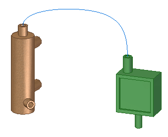
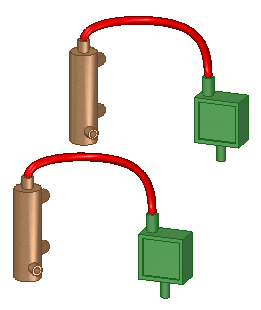
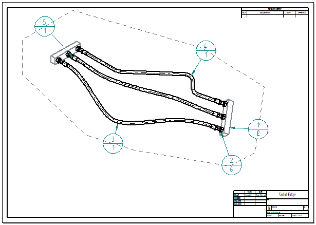

Adjustable tube design
Adjustable tube design overview
You can create a tube that is adjustable within a top-level assembly, rather than within the assembly in which the tube is created.
You can make a tube adjustable when the assembly containing the tube is placed in another assembly, either automatically or manually. To automatically make the tube adjustable, use the Place tubes in this assembly as adjustable when the assembly is placed in another assembly option on the Assembly page of the Solid Edge Options dialog box. To manually make the tube adjustable, click the tube in PathFinder and use the Simplified/Adjustable→Adjustable Part command.
As with other adjustable assemblies, tubes placed in the top level assembly are driven by the peers in the tube assembly to provide a consistent adjustable behavior.
Solid Edge Embedded Client supports adjustable tubes. When working with tubes within a managed environment, all rigid and adjustable tube parts contained within the same tube assembly use the same document properties.
Adjustable tube design workflow
Create a tube assembly
In the assembly environment, click Tools→Environs→XpresRoute.
In XpresRoute, click Home→Segments→Keypoint Curve Segment
 .
.Construct a path with the appropriate length.
Use the path to connect parts within the assembly.

To use the hose assembly to create a flat drawing of the tube path, create the path for the tube on a plane as a line with multiple control points.
To create an adjustable tube that needs to maintain a constant length, select the Fixed Length option in the Curve Length step of the Keypoint Curve Segment command.
In XpresRoute, click Home→Tubing→Tube
 .
.Use the Tube Options dialog box to define properties for the tube.
For more information on creating the tube, see Create a tube.
Make a tube assembly adjustable
In a new assembly, place multiple occurrences of the hose assembly.

In PathFinder, right-click an occurrence of the subassembly, point to Simplified/Adjustable, and then click Adjustable Assembly.
Make a tube part adjustable
In PathFinder, click the plus (+) symbol next to the subassembly to expand the subassembly contents.
In PathFinder, right-click the tube part, point to Simplified/Adjustable, and then click Adjustable Part.
Tubes and hoses are designed in the Tools tab→Environs group→XpresRoute application. They are defined as adjustable in the Assembly environment. To learn how to do this, see the Adjustable tube design workflow.
Redefining tube paths
You can redefine the path for a tube part contained in a lower assembly to use a path defined in a top-level assembly. This creates an adjustable tube based on a path in the top-level assembly and the tube properties defined in the lower-level adjustable tube assembly.
For more information, see Redefine a tube path.
Generating parts lists for adjustable tubes
You can display adjustable tubes as unique components in assembly reports and bend tables in the top-level assembly. Adjustable tubes maintain the same item numbers and properties, even with slightly different geometry. For more information, see Create a parts list for flexible hoses and tubing.
